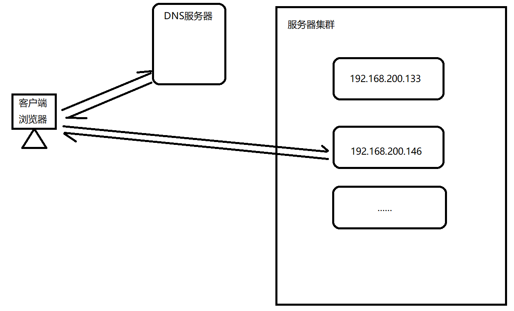
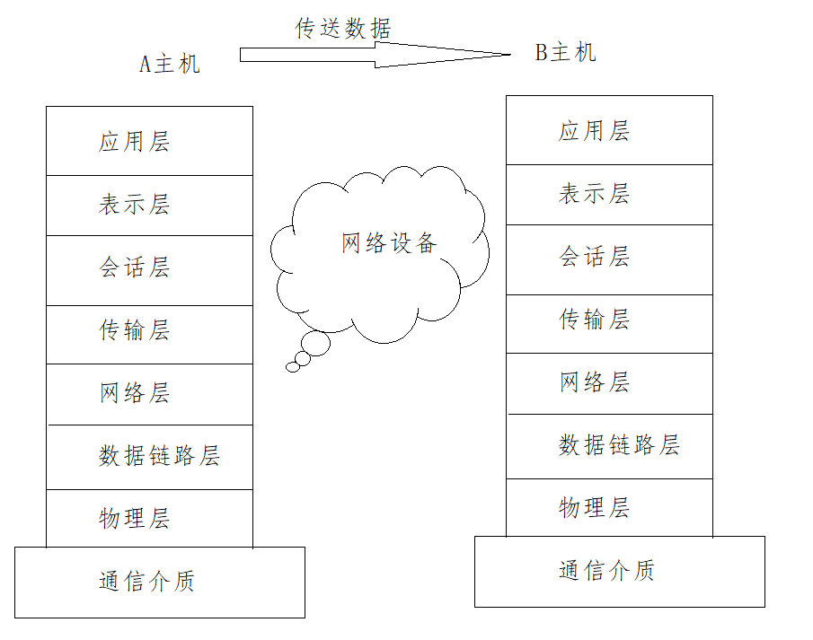
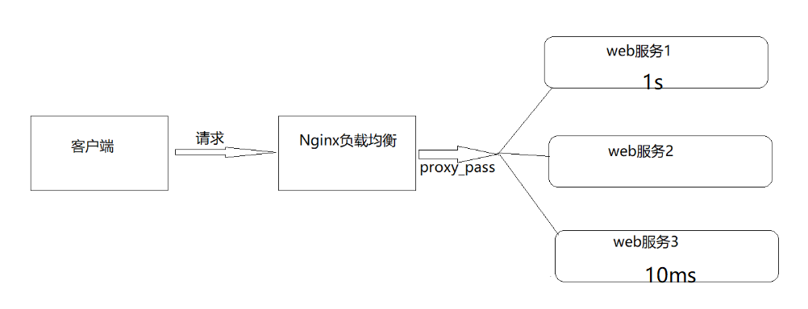
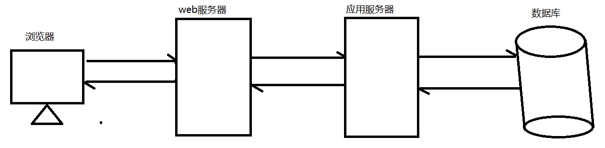
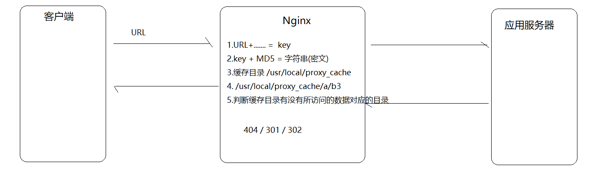

Nginx负载均衡
负载均衡概述
早期的网站流量和业务功能都比较简单，单台服务器足以满足基本的需求，但是随着互联网的发展，业务流量越来越大并且业务逻辑也跟着越来越复杂，单台服务器的性能及单点故障问题就凸显出来了，因此需要多台服务器进行性能的水平扩展及避免单点故障出现。那么如何将不同用户的请求流量分发到不同的服务器上呢？

负载均衡的原理及处理流程
系统的扩展可以分为纵向扩展和横向扩展。
纵向扩展是从单机的角度出发，通过增加系统的硬件处理能力来提升服务器的处理能力
横向扩展是通过添加机器来满足大型网站服务的处理能力。
这里面涉及到两个重要的角色分别是"应用集群"和"负载均衡器"。
应用集群：将同一应用部署到多台机器上，组成处理集群，接收负载均衡设备分发的请求，进行处理并返回响应的数据。
负载均衡器:将用户访问的请求根据对应的负载均衡算法，分发到集群中的一台服务器进行处理。
负载均衡的作用
1、解决服务器的高并发压力，提高应用程序的处理性能。
2、提供故障转移，实现高可用。
3、通过添加或减少服务器数量，增强网站的可扩展性。
4、在负载均衡器上进行过滤，可以提高系统的安全性。
负载均衡常用的处理方式
方式一:用户手动选择
这种方式比较原始，只要实现的方式就是在网站主页上面提供不同线路、不同服务器链接方式，让用户来选择自己访问的具体服务器，来实现负载均衡。

方式二:DNS轮询方式
DNS
域名系统（服务）协议（DNS）是一种分布式网络目录服务，主要用于域名与 IP 地址的相互转换。
大多域名注册商都支持对同一个主机名添加多条A记录，这就是DNS轮询，DNS服务器将解析请求按照A记录的顺序，随机分配到不同的IP上，这样就能完成简单的负载均衡。DNS轮询的成本非常低，在一些不重要的服务器，被经常使用。

如下是我们为某一个域名添加的IP地址，用2台服务器来做负载均衡。

验证:
ping www.nginx521.cn
清空本地的dns缓存
ipconfig/flushdns
我们发现使用DNS来实现轮询，不需要投入过多的成本，虽然DNS轮询成本低廉，但是DNS负载均衡存在明显的缺点。
1.可靠性低
假设一个域名DNS轮询多台服务器，如果其中的一台服务器发生故障，那么所有的访问该服务器的请求将不会有所回应，即使你将该服务器的IP从DNS中去掉，但是由于各大宽带接入商将众多的DNS存放在缓存中，以节省访问时间，导致DNS不会实时更新。所以DNS轮流上一定程度上解决了负载均衡问题，但是却存在可靠性不高的缺点。
2.负载均衡不均衡
DNS负载均衡采用的是简单的轮询负载算法，不能区分服务器的差异，不能反映服务器的当前运行状态，不能做到为性能好的服务器多分配请求，另外本地计算机也会缓存已经解析的域名到IP地址的映射，这也会导致使用该DNS服务器的用户在一定时间内访问的是同一台Web服务器，从而引发Web服务器减的负载不均衡。
负载不均衡则会导致某几台服务器负荷很低，而另外几台服务器负荷确很高，处理请求的速度慢，配置高的服务器分配到的请求少，而配置低的服务器分配到的请求多。
方式三:四/七层负载均衡
介绍四/七层负载均衡之前，我们先了解一个概念，OSI(open system interconnection),叫开放式系统互联模型，这个是由国际标准化组织ISO指定的一个不基于具体机型、操作系统或公司的网络体系结构。该模型将网络通信的工作分为七层。

应用层：为应用程序提供网络服务。
表示层：对数据进行格式化、编码、加密、压缩等操作。
会话层：建立、维护、管理会话连接。
传输层：建立、维护、管理端到端的连接，常见的有TCP/UDP。
网络层：IP寻址和路由选择
数据链路层：控制网络层与物理层之间的通信。
物理层：比特流传输。
所谓四层负载均衡指的是OSI七层模型中的传输层，主要是基于IP+PORT的负载均衡
实现四层负载均衡的方式：
硬件：F5 BIG-IP、Radware等
软件：LVS、Nginx、Hayproxy等
所谓的七层负载均衡指的是在应用层，主要是基于虚拟的URL或主机IP的负载均衡
实现七层负载均衡的方式：
软件：Nginx、Hayproxy等
四层和七层负载均衡的区别
四层负载均衡数据包是在底层就进行了分发，而七层负载均衡数据包则在最顶端进行分发，所以四层负载均衡的效率比七层负载均衡的要高。
四层负载均衡不识别域名，而七层负载均衡识别域名。
处理四层和七层负载以为其实还有二层、三层负载均衡，二层是在数据链路层基于mac地址来实现负载均衡，三层是在网络层一般采用虚拟IP地址的方式实现负载均衡。
实际环境采用的模式
四层负载(LVS)+七层负载(Nginx)
Nginx七层负载均衡
Nginx要实现七层负载均衡需要用到proxy_pass代理模块配置。Nginx默认安装支持这个模块，我们不需要再做任何处理。Nginx的负载均衡是在Nginx的反向代理基础上把用户的请求根据指定的算法分发到一组【upstream虚拟服务池】。
Nginx七层负载均衡的指令
upstream指令
该指令是用来定义一组服务器，它们可以是监听不同端口的服务器，并且也可以是同时监听TCP和Unix socket的服务器。服务器可以指定不同的权重，默认为1。
| 语法 | upstream name {...} |
|---|---|
| 默认值 | — |
| 位置 | http |
server指令
该指令用来指定后端服务器的名称和一些参数，可以使用域名、IP、端口或者unix socket
| 语法 | server name [paramerters] |
|---|---|
| 默认值 | — |
| 位置 | upstream |
Nginx七层负载均衡的实现流程

服务端设置
server {
listen 9001;
server_name localhost;
default_type text/html;
location /{
return 200 '<h1>192.168.200.146:9001</h1>';
}
}
server {
listen 9002;
server_name localhost;
default_type text/html;
location /{
return 200 '<h1>192.168.200.146:9002</h1>';
}
}
server {
listen 9003;
server_name localhost;
default_type text/html;
location /{
return 200 '<h1>192.168.200.146:9003</h1>';
}
}
负载均衡器设置
upstream backend{
server 192.168.200.146:9091;
server 192.168.200.146:9092;
server 192.168.200.146:9093;
}
server {
listen 8083;
server_name localhost;
location /{
proxy_pass http://backend;
}
}
负载均衡状态
代理服务器在负责均衡调度中的状态有以下几个：
| 状态 | 概述 |
|---|---|
| down | 当前的server暂时不参与负载均衡 |
| backup | 预留的备份服务器 |
| max_fails | 允许请求失败的次数 |
| fail_timeout | 经过max_fails失败后, 服务暂停时间 |
| max_conns | 限制最大的接收连接数 |
down
down:将该服务器标记为永久不可用，那么该代理服务器将不参与负载均衡。
upstream backend{
server 192.168.200.146:9001 down;
server 192.168.200.146:9002
server 192.168.200.146:9003;
}
server {
listen 8083;
server_name localhost;
location /{
proxy_pass http://backend;
}
}
该状态一般会对需要停机维护的服务器进行设置。
backup
backup:将该服务器标记为备份服务器，当主服务器不可用时，将用来传递请求。
upstream backend{
server 192.168.200.146:9001 down;
server 192.168.200.146:9002 backup;
server 192.168.200.146:9003;
}
server {
listen 8083;
server_name localhost;
location /{
proxy_pass http://backend;
}
}
此时需要将9094端口的访问禁止掉来模拟下唯一能对外提供访问的服务宕机以后，backup的备份服务器就要开始对外提供服务，此时为了测试验证，我们需要使用防火墙来进行拦截。
介绍一个工具firewall-cmd,该工具是Linux提供的专门用来操作firewall的。
查询防火墙中指定的端口是否开放
firewall-cmd --query-port=9001/tcp
如何开放一个指定的端口
firewall-cmd --permanent --add-port=9002/tcp
批量添加开发端口
firewall-cmd --permanent --add-port=9001-9003/tcp
如何移除一个指定的端口
firewall-cmd --permanent --remove-port=9003/tcp
重新加载
firewall-cmd --reload
其中
--permanent表示设置为持久
--add-port表示添加指定端口
--remove-port表示移除指定端口
max_conns
max_conns=number:用来设置代理服务器同时活动链接的最大数量，默认为0，表示不限制，使用该配置可以根据后端服务器处理请求的并发量来进行设置，防止后端服务器被压垮。
max_fails和fail_timeout
max_fails=number:设置允许请求代理服务器失败的次数，默认为1。
fail_timeout=time:设置经过max_fails失败后，服务暂停的时间，默认是10秒。
upstream backend{
server 192.168.200.133:9001 down;
server 192.168.200.133:9002 backup;
server 192.168.200.133:9003 max_fails=3 fail_timeout=15;
}
server {
listen 8083;
server_name localhost;
location /{
proxy_pass http://backend;
}
}
负载均衡策略
介绍完Nginx负载均衡的相关指令后，我们已经能实现将用户的请求分发到不同的服务器上，那么除了采用默认的分配方式以外，我们还能采用什么样的负载算法?
Nginx的upstream支持如下六种方式的分配算法，分别是:
| 算法名称 | 说明 |
|---|---|
| 轮询 | 默认方式 |
| weight | 权重方式 |
| ip_hash | 依据ip分配方式 |
| least_conn | 依据最少连接方式 |
| url_hash | 依据URL分配方式 |
| fair | 依据响应时间方式 |
轮询
是upstream模块负载均衡默认的策略。每个请求会按时间顺序逐个分配到不同的后端服务器。轮询不需要额外的配置。
upstream backend{
server 192.168.200.146:9001 weight=1;
server 192.168.200.146:9002;
server 192.168.200.146:9003;
}
server {
listen 8083;
server_name localhost;
location /{
proxy_pass http://backend;
}
}
weight加权[加权轮询]
weight=number:用来设置服务器的权重，默认为1，权重数据越大，被分配到请求的几率越大；该权重值，主要是针对实际工作环境中不同的后端服务器硬件配置进行调整的，所有此策略比较适合服务器的硬件配置差别比较大的情况。
upstream backend{
server 192.168.200.146:9001 weight=10;
server 192.168.200.146:9002 weight=5;
server 192.168.200.146:9003 weight=3;
}
server {
listen 8083;
server_name localhost;
location /{
proxy_pass http://backend;
}
}
ip_hash
当对后端的多台动态应用服务器做负载均衡时，ip_hash指令能够将某个客户端IP的请求通过哈希算法定位到同一台后端服务器上。这样，当来自某一个IP的用户在后端Web服务器A上登录后，在访问该站点的其他URL，能保证其访问的还是后端web服务器A。
| 语法 | ip_hash; |
|---|---|
| 默认值 | — |
| 位置 | upstream |
upstream backend{
ip_hash;
server 192.168.200.146:9001;
server 192.168.200.146:9002;
server 192.168.200.146:9003;
}
server {
listen 8083;
server_name localhost;
location /{
proxy_pass http://backend;
}
}
需要额外多说一点的是使用ip_hash指令无法保证后端服务器的负载均衡，可能导致有些后端服务器接收到的请求多，有些后端服务器接收的请求少，而且设置后端服务器权重等方法将不起作用。

least_conn
最少连接，把请求转发给连接数较少的后端服务器。轮询算法是把请求平均的转发给各个后端，使它们的负载大致相同；但是，有些请求占用的时间很长，会导致其所在的后端负载较高。这种情况下，least_conn这种方式就可以达到更好的负载均衡效果。
upstream backend{
least_conn;
server 192.168.200.146:9001;
server 192.168.200.146:9002;
server 192.168.200.146:9003;
}
server {
listen 8083;
server_name localhost;
location /{
proxy_pass http://backend;
}
}
此负载均衡策略适合请求处理时间长短不一造成服务器过载的情况。

url_hash
按访问url的hash结果来分配请求，使每个url定向到同一个后端服务器，要配合缓存命中来使用。同一个资源多次请求，可能会到达不同的服务器上，导致不必要的多次下载，缓存命中率不高，以及一些资源时间的浪费。而使用url_hash，可以使得同一个url（也就是同一个资源请求）会到达同一台服务器，一旦缓存住了资源，再此收到请求，就可以从缓存中读取。
upstream backend{
hash &request_uri;
server 192.168.200.146:9001;
server 192.168.200.146:9002;
server 192.168.200.146:9003;
}
server {
listen 8083;
server_name localhost;
location /{
proxy_pass http://backend;
}
}
访问如下地址：
http://192.168.200.133:8083/a
http://192.168.200.133:8083/b
http://192.168.200.133:8083/c

fair
fair采用的不是内建负载均衡使用的轮换的均衡算法，而是可以根据页面大小、加载时间长短智能的进行负载均衡。那么如何使用第三方模块的fair负载均衡策略。
upstream backend{
fair;
server 192.168.200.146:9001;
server 192.168.200.146:9002;
server 192.168.200.146:9003;
}
server {
listen 8083;
server_name localhost;
location /{
proxy_pass http://backend;
}
}
但是如何直接使用会报错，因为fair属于第三方模块实现的负载均衡。需要添加nginx-upstream-fair,如何添加对应的模块:
- 下载nginx-upstream-fair模块
下载地址为:
https://github.com/gnosek/nginx-upstream-fair
- 将下载的文件上传到服务器并进行解压缩
unzip nginx-upstream-fair-master.zip
- 重命名资源
mv nginx-upstream-fair-master fair
- 使用./configure命令将资源添加到Nginx模块中
./configure --add-module=/root/fair
- 编译
make
编译可能会出现如下错误，ngx_http_upstream_srv_conf_t结构中缺少default_port

解决方案:
在Nginx的源码中 src/http/ngx_http_upstream.h,找到ngx_http_upstream_srv_conf_s，在模块中添加添加default_port属性
in_port_t default_port

然后再进行make.
- 更新Nginx
6.1 将sbin目录下的nginx进行备份
mv /usr/local/nginx/sbin/nginx /usr/local/nginx/sbin/nginxold
6.2 将安装目录下的objs中的nginx拷贝到sbin目录
cd objs
cp nginx /usr/local/nginx/sbin
6.3 更新Nginx
cd ../
make upgrade
- 编译测试使用Nginx
上面介绍了Nginx常用的负载均衡的策略，有人说是5种，是把轮询和加权轮询归为一种，也有人说是6种。那么在咱们以后的开发中到底使用哪种，这个需要根据实际项目的应用场景来决定的。
负载均衡案例
案例一：对所有请求实现一般轮询规则的负载均衡
upstream backend{
server 192.168.200.146:9001;
server 192.168.200.146:9002;
server 192.168.200.146:9003;
}
server {
listen 8083;
server_name localhost;
location /{
proxy_pass http://backend;
}
}
案例二：对所有请求实现加权轮询规则的负载均衡
upstream backend{
server 192.168.200.146:9001 weight=7;
server 192.168.200.146:9002 weight=5;
server 192.168.200.146:9003 weight=3;
}
server {
listen 8083;
server_name localhost;
location /{
proxy_pass http://backend;
}
}
案例三：对特定资源实现负载均衡
upstream videobackend{
server 192.168.200.146:9001;
server 192.168.200.146:9002;
}
upstream filebackend{
server 192.168.200.146:9003;
server 192.168.200.146:9004;
}
server {
listen 8084;
server_name localhost;
location /video/ {
proxy_pass http://videobackend;
}
location /file/ {
proxy_pass http://filebackend;
}
}
案例四：对不同域名实现负载均衡
upstream itcastbackend{
server 192.168.200.146:9001;
server 192.168.200.146:9002;
}
upstream itheimabackend{
server 192.168.200.146:9003;
server 192.168.200.146:9004;
}
server {
listen 8085;
server_name www.itcast.cn;
location / {
proxy_pass http://itcastbackend;
}
}
server {
listen 8086;
server_name www.itheima.cn;
location / {
proxy_pass http://itheimabackend;
}
}
案例五：实现带有URL重写的负载均衡
upstream backend{
server 192.168.200.146:9001;
server 192.168.200.146:9002;
server 192.168.200.146:9003;
}
server {
listen 80;
server_name localhost;
location /file/ {
rewrite ^(/file/.*) /server/$1 last;
}
location / {
proxy_pass http://backend;
}
}
Nginx四层负载均衡
Nginx在1.9之后，增加了一个stream模块，用来实现四层协议的转发、代理、负载均衡等。stream模块的用法跟http的用法类似，允许我们配置一组TCP或者UDP等协议的监听，然后通过proxy_pass来转发我们的请求，通过upstream添加多个后端服务，实现负载均衡。
四层协议负载均衡的实现，一般都会用到LVS、HAProxy、F5等，要么很贵要么配置很麻烦，而Nginx的配置相对来说更简单，更能快速完成工作。
添加stream模块的支持
Nginx默认是没有编译这个模块的，需要使用到stream模块，那么需要在编译的时候加上--with-stream。
完成添加--with-stream的实现步骤:
》将原有/usr/local/nginx/sbin/nginx进行备份
》拷贝nginx之前的配置信息
》在nginx的安装源码进行配置指定对应模块 ./configure --with-stream
》通过make模板进行编译
》将objs下面的nginx移动到/usr/local/nginx/sbin下
》在源码目录下执行 make upgrade进行升级，这个可以实现不停机添加新模块的功能
Nginx四层负载均衡的指令
stream指令
该指令提供在其中指定流服务器指令的配置文件上下文。和http指令同级。
| 语法 | stream { ... } |
|---|---|
| 默认值 | — |
| 位置 | main |
upstream指令
该指令和http的upstream指令是类似的。
四层负载均衡的案例
需求分析

实现步骤
(1)准备Redis服务器,在一条服务器上准备三个Redis，端口分别是6379,6378
1.上传redis的安装包，redis-4.0.14.tar.gz
2.将安装包进行解压缩
tar -zxf redis-4.0.14.tar.gz
3.进入redis的安装包
cd redis-4.0.14
4.使用make和install进行编译和安装
make PREFIX=/usr/local/redis/redis01 install
5.拷贝redis配置文件redis.conf到/usr/local/redis/redis01/bin目录中
cp redis.conf /usr/local/redis/redis01/bin
6.修改redis.conf配置文件
port 6379 #redis的端口
daemonize yes #后台启动redis
7.将redis01复制一份为redis02
cd /usr/local/redis
cp -r redis01 redis02
8.将redis02文件文件夹中的redis.conf进行修改
port 6378 #redis的端口
daemonize yes #后台启动redis
9.分别启动，即可获取两个Redis.并查看
ps -ef | grep redis
使用Nginx将请求分发到不同的Redis服务器上。
(2)准备Tomcat服务器.
1.上传tomcat的安装包，apache-tomcat-8.5.56.tar.gz
2.将安装包进行解压缩
tar -zxf apache-tomcat-8.5.56.tar.gz
3.进入tomcat的bin目录
cd apache-tomcat-8.5.56/bin
./startup
nginx.conf配置
stream {
upstream redisbackend {
server 192.168.200.146:6379;
server 192.168.200.146:6378;
}
upstream tomcatbackend {
server 192.168.200.146:8080;
}
server {
listen 81;
proxy_pass redisbackend;
}
server {
listen 82;
proxy_pass tomcatbackend;
}
}
访问测试。
Nginx缓存集成
缓存的概念
缓存就是数据交换的缓冲区(称作:Cache),当用户要获取数据的时候，会先从缓存中去查询获取数据，如果缓存中有就会直接返回给用户，如果缓存中没有，则会发请求从服务器重新查询数据，将数据返回给用户的同时将数据放入缓存，下次用户就会直接从缓存中获取数据。

缓存其实在很多场景中都有用到，比如：
| 场景 | 作用 |
|---|---|
| 操作系统磁盘缓存 | 减少磁盘机械操作 |
| 数据库缓存 | 减少文件系统的IO操作 |
| 应用程序缓存 | 减少对数据库的查询 |
| Web服务器缓存 | 减少对应用服务器请求次数 |
| 浏览器缓存 | 减少与后台的交互次数 |
缓存的优点
1.减少数据传输，节省网络流量，加快响应速度，提升用户体验；
2.减轻服务器压力；
3.提供服务端的高可用性；
缓存的缺点
1.数据的不一致
2.增加成本

本次课程注解讲解的是Nginx,Nginx作为web服务器，Nginx作为Web缓存服务器，它介于客户端和应用服务器之间，当用户通过浏览器访问一个URL时，web缓存服务器会去应用服务器获取要展示给用户的内容，将内容缓存到自己的服务器上，当下一次请求到来时，如果访问的是同一个URL，web缓存服务器就会直接将之前缓存的内容返回给客户端，而不是向应用服务器再次发送请求。web缓存降低了应用服务器、数据库的负载，减少了网络延迟，提高了用户访问的响应速度，增强了用户的体验。
Nginx的web缓存服务
Nginx是从0.7.48版开始提供缓存功能。Nginx是基于Proxy Store来实现的，其原理是把URL及相关组合当做Key,在使用MD5算法对Key进行哈希，得到硬盘上对应的哈希目录路径，从而将缓存内容保存在该目录中。它可以支持任意URL连接，同时也支持404/301/302这样的非200状态码。Nginx即可以支持对指定URL或者状态码设置过期时间，也可以使用purge命令来手动清除指定URL的缓存。

Nginx缓存设置的相关指令
Nginx的web缓存服务主要是使用ngx_http_proxy_module模块相关指令集来完成，接下来我们把常用的指令来进行介绍下。
proxy_cache_path
该指定用于设置缓存文件的存放路径
| 语法 | proxy_cache_path path [levels=number] keys_zone=zone_name:zone_size [inactive=time][max_size=size]; |
|---|---|
| 默认值 | — |
| 位置 | http |
path:缓存路径地址,如：
/usr/local/proxy_cache
levels: 指定该缓存空间对应的目录，最多可以设置3层，每层取值为1|2如 :
levels=1:2 缓存空间有两层目录，第一次是1个字母，第二次是2个字母
举例说明:
itheima[key]通过MD5加密以后的值为 43c8233266edce38c2c9af0694e2107d
levels=1:2 最终的存储路径为/usr/local/proxy_cache/d/07
levels=2:1:2 最终的存储路径为/usr/local/proxy_cache/7d/0/21
levels=2:2:2 最终的存储路径为??/usr/local/proxy_cache/7d/10/e2
keys_zone:用来为这个缓存区设置名称和指定大小，如：
keys_zone=itcast:200m 缓存区的名称是itcast,大小为200M,1M大概能存储8000个keys
inactive:指定缓存的数据多次时间未被访问就将被删除，如：
inactive=1d 缓存数据在1天内没有被访问就会被删除
max_size:设置最大缓存空间，如果缓存空间存满，默认会覆盖缓存时间最长的资源，如:
max_size=20g
配置实例:
http{
proxy_cache_path /usr/local/proxy_cache keys_zone=itcast:200m levels=1:2:1 inactive=1d max_size=20g;
}
proxy_cache
该指令用来开启或关闭代理缓存，如果是开启则自定使用哪个缓存区来进行缓存。
| 语法 | proxy_cache zone_name\ | off; |
|---|---|---|
| 默认值 | proxy_cache off; | |
| 位置 | http、server、location |
zone_name：指定使用缓存区的名称
proxy_cache_key
该指令用来设置web缓存的key值，Nginx会根据key值MD5哈希存缓存。
| 语法 | proxy_cache_key key; |
|---|---|
| 默认值 | proxy_cache_key $scheme$proxy_host$request_uri; |
| 位置 | http、server、location |
proxy_cache_valid
该指令用来对不同返回状态码的URL设置不同的缓存时间
| 语法 | proxy_cache_valid [code ...] time; |
|---|---|
| 默认值 | — |
| 位置 | http、server、location |
如：
proxy_cache_valid 200 302 10m;
proxy_cache_valid 404 1m;
为200和302的响应URL设置10分钟缓存，为404的响应URL设置1分钟缓存
proxy_cache_valid any 1m;
对所有响应状态码的URL都设置1分钟缓存
proxy_cache_min_uses
该指令用来设置资源被访问多少次后被缓存
| 语法 | proxy_cache_min_uses number; |
|---|---|
| 默认值 | proxy_cache_min_uses 1; |
| 位置 | http、server、location |
proxy_cache_methods
该指令用户设置缓存哪些HTTP方法
| 语法 | proxy_cache_methods GET\ | HEAD\ | POST; |
|---|---|---|---|
| 默认值 | proxy_cache_methods GET HEAD; | ||
| 位置 | http、server、location |
默认缓存HTTP的GET和HEAD方法，不缓存POST方法。
Nginx缓存设置案例
需求分析

步骤实现
1.环境准备
应用服务器的环境准备
（1）在192.168.200.146服务器上的tomcat的webapps下面添加一个js目录，并在js目录中添加一个jquery.js文件
（2）启动tomcat
（3）访问测试
http://192.168.200.146:8080/js/jquery.js
Nginx的环境准备
（1）完成Nginx反向代理配置
http{
upstream backend{
server 192.168.200.146:8080;
}
server {
listen 8080;
server_name localhost;
location / {
proxy_pass http://backend/js/;
}
}
}
（2）完成Nginx缓存配置
4.添加缓存配置
http{
proxy_cache_path /usr/local/proxy_cache levels=2:1 keys_zone=itcast:200m inactive=1d max_size=20g;
upstream backend{
server 192.168.200.146:8080;
}
server {
listen 8080;
server_name localhost;
location / {
proxy_cache itcast;
proxy_cache_key itheima;
proxy_cache_min_uses 5;
proxy_cache_valid 200 5d;
proxy_cache_valid 404 30s;
proxy_cache_valid any 1m;
add_header nginx-cache "$upstream_cache_status";
proxy_pass http://backend/js/;
}
}
}
Nginx缓存的清除
方式一:删除对应的缓存目录
rm -rf /usr/local/proxy_cache/......
方式二:使用第三方扩展模块
ngx_cache_purge
（1）下载ngx_cache_purge模块对应的资源包，并上传到服务器上。
ngx_cache_purge-2.3.tar.gz
（2）对资源文件进行解压缩
tar -zxf ngx_cache_purge-2.3.tar.gz
（3）修改文件夹名称，方便后期配置
mv ngx_cache_purge-2.3 purge
（4）查询Nginx的配置参数
nginx -V
（5）进入Nginx的安装目录，使用./configure进行参数配置
./configure --add-module=/root/nginx/module/purge
（6）使用make进行编译
make
（7）将nginx安装目录的nginx二级制可执行文件备份
mv /usr/local/nginx/sbin/nginx /usr/local/nginx/sbin/nginxold
（8）将编译后的objs中的nginx拷贝到nginx的sbin目录下
cp objs/nginx /usr/local/nginx/sbin
（9）使用make进行升级
make upgrade
（10）在nginx配置文件中进行如下配置
server{
location ~/purge(/.*) {
proxy_cache_purge itcast itheima;
}
}
Nginx设置资源不缓存
前面咱们已经完成了Nginx作为web缓存服务器的使用。但是我们得思考一个问题就是不是所有的数据都适合进行缓存。比如说对于一些经常发生变化的数据。如果进行缓存的话，就很容易出现用户访问到的数据不是服务器真实的数据。所以对于这些资源我们在缓存的过程中就需要进行过滤，不进行缓存。
Nginx也提供了这块的功能设置，需要使用到如下两个指令
proxy_no_cache
该指令是用来定义不将数据进行缓存的条件。
| 语法 | proxy_no_cache string ...; |
|---|---|
| 默认值 | — |
| 位置 | http、server、location |
配置实例
proxy_no_cache $cookie_nocache $arg_nocache $arg_comment;
proxy_cache_bypass
该指令是用来设置不从缓存中获取数据的条件。
| 语法 | proxy_cache_bypass string ...; |
|---|---|
| 默认值 | — |
| 位置 | http、server、location |
配置实例
proxy_cache_bypass $cookie_nocache $arg_nocache $arg_comment;
上述两个指令都有一个指定的条件，这个条件可以是多个，并且多个条件中至少有一个不为空且不等于"0",则条件满足成立。上面给的配置实例是从官方网站获取的，里面使用到了三个变量，分别是$cookie_nocache、$arg_nocache、$arg_comment
$cookie_nocache、$arg_nocache、$arg_comment
这三个参数分别代表的含义是:
$cookie_nocache
指的是当前请求的cookie中键的名称为nocache对应的值
$arg_nocache和$arg_comment
指的是当前请求的参数中属性名为nocache和comment对应的属性值
案例演示下:
log_format params $cookie_nocache | $arg_nocache | $arg_comment；
server{
listen 8081;
server_name localhost;
location /{
access_log logs/access_params.log params;
add_header Set-Cookie 'nocache=999';
root html;
index index.html;
}
}
案例实现
设置不缓存资源的配置方案
server{
listen 8080;
server_name localhost;
location / {
if ($request_uri ~ /.*\.js$){
set $nocache 1;
}
proxy_no_cache $nocache $cookie_nocache $arg_nocache $arg_comment;
proxy_cache_bypass $nocache $cookie_nocache $arg_nocache $arg_comment;
}
}